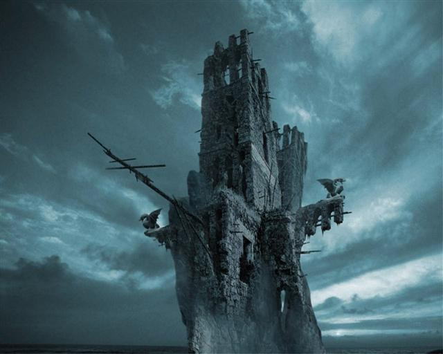

The Wreck of the Aetherwing
by
James DeWitt
I stood waiting with two others in the echoing halls of the immense Docking Bay on the 765th Level of the Great Redoubt. Foremost among us was Ybramm, Guild Master of the Aerarchs. He stood with his massive forearms folded, and a dour expression on his face. A neat beard was cultivated in an archaic style about the fringe of his jaw, but he was otherwise as bald as a polished geode. Near him stood a tall lady: Kerruwen she was called, and she wore the trappings of the Watch. Her Rank Badges showed she was Mistress of those Watchmen who warded the Docking Bay. Her beauty was as great as her temper was legended to be when she was not implicitly obeyed. Neither of these august personages deigned to acknowledge my presence, Monstruwacan though I was.
My belongings were neatly piled behind me: various instruments of my Order, devices to record findings and sightings, my Armor and armor-suit in its case, and my Diskos. Looking at that dreadful weapon I felt a slight shudder, partly of anticipation and partly of anxiety. I was Prepared, and I was going Out. Out, and in a Sky-Ship. This had been one of my dearest wishes since boyhood, and now, at the age of twenty-seven, it was to be fulfilled. I would be a crewman and Monstruwacan not merely on a Sky-Ship, but upon the most renowned of the fleet, the Aetherwing.
I stood in silence, rubbing absently at the still-tender spot on my left inner forearm, the site of my recent endowment of the Capsule that I would bite in the event of misadventure that might lead to Soul-death, the Capsule that when bitten would swiftly release toxins potent enough to end my life before some monstrous Outer Power could slay my soul. My musings were interrupted by the monstrous blare of the Home-Call. Kerruwen stood at the control podium and held her alabaster finger down on the Call button. Her exquisite features were marked by a pinched look of supreme annoyance.
Glancing through the great Dock window, my breath caught at sight of the object of Kerruwen’s tension. The Aetherwing hovered aloft just beyond the barrier that is the Air-Clog. Despite repeated attempts at contact, it had refused to initiate communication or docking procedures, and hung motionlessly silhouetted against our dull, dying red sun.
“Ybramm! Master Aerarch,” Kerruwen urgently addressed the stony and impassive form of the Guild Master of the Sky-Kings. “What have I done to be cursed with this? Your man there is as intractable a brute as any Giant of the Kilns! Does he intentionally disrespect port protocol? If his actions be not mere contrariness, we must assume that matters are terribly amiss on the ship.”
Ybramm answered her without turning. His voice had the quality of stones being ground in the polishing engines of the Geologists. “Jette is the finest Aerarch of all in my care. His methods are at times unorthodox, and yet he has accomplished more in our service than any of the others. Need I remind you of the rare plants he procured at terrible risk from the Valley of the Hounds? Plants that our Doctors and Herbalists have used to devise wondrous medicines? And what of his selfless and brilliant rescue of the survey group that was beset by the Silent Ones themselves? Cultivate patience, Mistress. If aught was amiss in fashion beyond rectification, Jette would send word.” In an admonitory tone, Ybramm added “He is no fool, Lady.”
Kerruwen’s obsidian eyes blazed, and her hair seemed to flow about her like the wreath of some battle-goddess stooping upon her prey. Her mouth opened to deliver a scathing retort when the air itself throbbed about us with the beating of the Master-Word, sent from the brain-elements of all hands of the great ship.
Kerruwen’s mouth snapped shut, and she worked the controls that opened the Air-clog and the great bay doors. I noticed a small smile on the lips of Aerarch Ybramm. The great doors slid open, and the Aetherwing glided home.
I looked on wide-eyed. The Aetherwing! She was huge, the largest class of all the Flying-Ships. Her hull was crafted of the wondrous gray metal of the Redoubt, but constant infusions of the Current that powered her gave the metal a liquid, gleaming quality. In shape, she was fashioned in the form of a vast trilobite, with many great windows along the sides and underneath for viewing the Land and skies about. Her great search-lamps were now hooded, and her armaments withdrawn.
My nervousness increased. I was about to meet Jette. He was without doubt the most popular Hero of our day. Jette, the darling of the hour-slips, the most famed of the Aerarchs. I knew every story of his exploits--and they were many--and Monstruwacan though I was, and due a measure of respect of my own, I was yet young, and almost giddy at the prospect of meeting this mighty man.
The Ship settled into its cradle. The doors opened, and the crew disembarked. Down the ramp strode Jette himself. Just short of his middle-years, he was tall, lean of waist, and great of chest and shoulder. His hair was long, thick and flowed in a pale queue down his back. His gray armor showed signs of battle, and his Aerarch’s Lenses were down about his neck. He wore a woven band of blue about his brow, and his smile was wide, glad, and dazzling. “My friends! My Crew! Home again are we, back in the loving embrace of Mother Redoubt! Give thanks, dear friends!” His voice was clear and ringing.
He strode first to Master Ybramm, and clasped a hand to his heart. He bowed his head and spoke in a formal tone. “Master Aerarch: good it is to stand upon my two feet in your presence again. I have missives from our distant kin in the Far Pyramid.” He then turned to the tight-lipped Kerruwen, and spoke less formally “ Dear Lady, I thank you for receiving my ship into your care. Any journey, no matter how peril-fraught, is worth all the dangers of gathering Dusk merely to see your lovely smile at my safe return.” Jette concluded his greeting with a deep and ostentatious bow. As he rose, he removed the blue band from his brow and gently placed it in Kerruwen’s waiting hand.
Kerruwen gripped the band in clenched fist. Her eyes glittered dangerously. “Tell me then, Jette, why I was made to wait three hours for you to finally deign to enter the Docks?”
Jette’s face clouded with a momentary grief. “Our journey was not wholly without incident, Mistress Kerruwen. As you no doubt already know, we were alerted by the Monstruwacans of strange phenomena concerning the Towers to our southwest. It would appear great and unknown forces are at work there. By some artifice, the Towers have been built upon. Great walls are now in place where none have ever been, spanning the spaces between the three Towers. Moreover, the Pit of Red Smoke has issued forth such a cloud of fume that nothing of this could be seen from the Tower of Observation. Our instruments showed no apparent danger, nor did the Night-Hearing. Monstruwacan Teslarchus relayed this to his brethren here, and it was decided that we cautiously investigate this new structure.”
As he spoke, I noted two crewmen bearing a bier down the ramp. I approached Jette, as did Master Ybramm.
“ We sent down a Glider. As we approached, dark shapes leapt with dizzying speed from the battlements of the newly fortified Towers, and were among us. My men fought valiantly, and we cleared them from our craft after a mighty battle. Four of mine were…taken. Their cries were hideous to hear, and I fear that they have been bereft of their Spirits. Teslarchus cried out, and I saw one of these abominations had extended an obscenely fluid limb into his breast. His Spirit, at least, was preserved. We are now without a Monstruwacan, and I have lost a dear and brave friend. The Monstruwacans must be told; Teslarchus deserves much honor as he is consigned to the Current.”
Clearing my throat, I spoke up. “ Aerarch, I am sent from the Tower of Observation with the following message: ‘Hail, and well met, First Aerarch Jette of the Aetherwing. We are aware of the fall of our noble and well-loved Brother, Teslarchus. Our thanks to you for bearing his body Home. I, Master Monstruwacan Tiberuus, send you this Brother to join your crew. Armitari is yet young, but his Spirit is bright, and neither his skill nor knowledge of our Order’s arts is lacking. May he serve you and your crew as loyally and well as he ever has our own Order.’ “
Jette glanced at me, as if just noting my presence. “Ho! A young Monstruwacan! I am gladdened to know that the tradition between our great Orders shall continue!” Striding forward, Jette gripped my hand and forearm in an iron clasp. “ You are called Armitari, my new advisor?”
“Sir, I am Monstruwacan Armitari. I am Prepared. I shall journey the winds of Twilight with you.”
Jette nodded. “Bravely said, friend Armitari. Come: there is something you must see.” He led me to the bier, and gently pulled back the cloak obscuring my fallen fellow Monstruwacan’s face. Seeing it, I gasped. The head and shoulders of the corpse were cloven and burnt.
Noting my dismay, Jette continued in tones of gentility and utmost respect. “Teslarchus was a true friend and brave ally in peace and battle. He and I have served together for many years, and could I have surrendered my own life to save his, it would have been done. His straits at the end though, they were such that the soul-death was upon him and he could not bite the Capsule. In mercy, in friendship, my Diskos ransomed his Spirit. Know this, young Armitari: for you, I would do the same. That is my troth. And I am in hope that for me you would do likewise, if a situation ever warranted such. This is the way of things for those of us that journey Outside. Now, stow your gear upon the craft. You will find Teslarchus’ old chambers readily enough.”
Somewhat shaken, I turned to gather my things. As I began loading my equipment aboard the mighty craft, Jette called up to me.
“Monstruwacan Armitari! Hail, and well-met. Welcome to the Aetherwing!”
Despite Aerarch Jette’s flamboyant welcome, we were not to depart for a full five days. Much has to be done to prepare a Sky-ship for a sojourn in the Land, for no Aerarch--even one of skill as renowned as Jette-- could vouchsafe what might befall to delay a return Home.
In the days before we were to soar Out into the dim skies of the Valley, I acquainted myself with the ways of the wondrous ship. I was shown the Observation decks, the Command deck, the sleeping quarters, the Bombardier stations, and so much more that my head spun with the surfeit of new learning. Most importantly, I met many of the Aerarch crewmen and the Watch assigned to the ship. Despite my youth and inexperience, these brave men of the ship welcomed me good-naturedly as a new brother.
Jette himself was seen little during these days. Other than a few brief glances at Teslarchus’ Ceremony of Return, I had no contact with him at all. I was, however, taken under the wing of his Second, the seasoned Second Aerarch Lido. During our tour of the ship, which Lido knew as he knew the grip of his Diskos, I was shown the proud vessel’s radiant heart. “This, lad, is what allows us to rule the skies. This is what makes us-- what allows us to be-- Aerarch.” the inveterate Lido proudly told me as he revealed to me the Current-chamber.
Like a great gleaming orb it was: fashioned of the wondrous metal orichalcum. Within the orb’s confines was stored a vast amount of the Current itself. It was from here that the Current was directed to various devices and workings of the ship. The amount of the Current required allowing flight alone, as well as powering the various instrumentation and weaponry for one of the Great Ships was staggering. As I looked in awe, Lido showed me the instruments used to measure and regulate the amount of Current and its rate of expenditure.
I was also selected to assist Lido in delivering the crew’s Diskoi to Kerruwen for transport to the nearest Charge Master. That fierce Lady paid little heed to me; fortunately, Lido was her uncle, of whom she was very fond--far fonder of him than she was of Jette, as I soon learned.
It was from conversations between the these two that I discovered the reason for Jette’s delay in docking.
“Founder’s Bones, Lido, I do think that man seizes any opportunity to irk me. I know he sees women as mere playthings, and the idea of obeying me chafes him. Even now I can see his mocking smile in my inner eye.”
“No, Lady. I think perhaps you do not know him so well as you think. Jette is what he is. He knows the necessity of law and rule. Even so, his Spirit is wild and free like one of the great birds spoken of from the Days of Light. He must do as he will do. He means no disrespect, even and especially to you. He himself has said that it is a great shame you, being a woman, are obliged to never leave the Redoubt. He also says that in battle, you would be the match of any three men one cared to name.” With a wry twist of her mouth and arched eyebrow, Kerruwen replied “Slanderous lies. Five men, at the least.”
Lido’s smiled, but swiftly grew serious. “What kept us from the docks was great care and concern. The foe we faced from the Towers was unlike any we have seen. A Night-Hound is a terror indeed, but has naught of subtlety about it. It courses and kills, until it is killed itself. The Kiln-Giants can be cunning, but they cannot hide in our midst. This foe could, and did.
“Mistress, they were pan-morphic. It seemed that they were made of countless motes of darkness that flowed and took on myriad shapes. And some of them took on the form of men. It was a harrowing time aboard the ‘Wing until we could scour every room with the Current, and account for the ability of every man to speak the Master-Word. Jette would allow neither return to nor converse with Mother Redoubt until he ascertained that no contagion would be carried in by his Ship or crew.”
Kerruwen looked troubled. “Perhaps I spoke in haste. Time and again I do, it seems. Often, we of the Watch are required to make swift decisions, and to act upon them.” She sighed. “Lido, I fear for the Ships. Three there are that are yet overdue: the Empyrean, Awakening Light,and Hydrogyrum’s Pinions. We have had no sendings from them. Zephyrus’ Dancer and Stormhound at least wait in the safety of the Docks with the Aetherwing. The Monstruwacans cannot find the others, not even with all the Spyglasses in their tall tower. They tell us of great Forces abroad in the Land. Perhaps these Modified Towers are some new manifestation of Inimicae. Even the skills of one such as Jette may not be enough to safeguard another return for the ‘Wing…Lido, I fear that very soon the bold Aerarchs and their Sky-Ships will no longer soar our skies.”
The days passed, and time came to depart. I stood next to Aerarch Lido, at the forefront of the crew of the Aetherwing. All preparations were done, and every man stood ready for flight. First Aerarch Jette faced Master Ybramm and Watch Mistress Kerruwen.
The Ritual of Departure had begun.
Ybramm spoke: “Aerarch Jette, step forward.” Jette left the assembled ranks of his crew and stood stock still before Ybramm. “Aerarch Jette: in the name of our Order, I charge you with the care of these men. You shall do all in your power to preserve their lives and their Spirits. You shall seek knowledge, that the race of Man shall be enriched. You shall not seek battle, but if battle finds you, you shall give the powers and intelligences of Darkness reason to hesitate ere they deign assault another man. So you are charged by the sons and daughters of Mother Redoubt.”
Jette replied, “As willing instrument of Humanity and Mother Redoubt, this charge I readily accept.”
Kerruwen stepped forward. She wore the full armor and regalia of her office, and in her gloved hands held a blue band of finest silk-moth lace. Jette bowed his head, and she tied the band around his hair, gathering it into a queue. She intoned the ritual words: “Wind in your hair of a thousand laces, Sky-King. May luck in battle be yours, and safe return Home at journey’s end. You are bid by the daughters and sons of Mother Redoubt to return to us.”
Raising his head, Jette responded. “If this thing can be done, it shall be so. I carry the dear memory of the noble scions of Mother Redoubt with me into the Dusk.”
A mighty roar and blue glare filled the Docking Bay as Ybramm, Kerruwen, and all the Watch present saluted us with blazing Diskoi, and we of the Aetherwing returned the salute. The ceremony thus ended, we boarded the great Ship.
With a mounting, vibratory hum, the Aetherwing lifted from its cradle. The great doors of the Bay slid open before us, and the Home-Call howled defiance into the Twilight as the mighty Ship glided smoothly from the Redoubt. We passed the Electric Circle and the Air-clog, and were now truly in the Vast Land of Dusk.
From my station on the command deck, I wondered if my fellow Monstruwacans watched on their instruments. I wondered if the felt envy, or relief that they were not chosen on my place. In days past, I myself loved little more than to watch the departure and return of the Great Ships. To see their huge silvery shapes gliding regally through the gloaming skies was a sight to thrill all but the most banal and prosaic of minds.
The Great Ships had the form of mighty stylized trilobites of gleaming metal, all graceful lines and scalloped armor plate. Lido had informed me that the inventor of the Ships admired the simple functionality of the creatures (which were kept as pets in aquaria by many in the Redoubt) and merely adapted the armored head, scalloped body, and tapered bifurcate tail to his own vision. The command deck, where I currently sat, was located in the blunt head of the craft.
I knew of the lesser controls that maneuvered the ‘Wing in and out of port, and which were used for routine navigation of the craft. Lido had told me that more precise controls existed, and were used by the commanding Aerarch only in situations of danger or battle.
For the moment, Lido was piloting the ‘Wing, by means of a system of levers on an upright cylinder. Jette stood at his ease nearby. There were many great view ports in the craft, and ere long I saw the red glow of the Giant Kilns.
Jette addressed the entire crew by means of a speaker. “My friends, we have a mission of great import. We are to attempt to locate those brethren of ours that are overdue. It may be that they are Lost. It may be that they are beleaguered. Whatever the case, we shall strive our utmost to give succor. Or, perhaps we shall be required to exact vengeance for the fallen. This is our work. I expect every man to strive as never before towards the completion of this task.’
He turned to me. “Come now, my new advisor, let us go to the foremost observation deck, that we may become better acquainted.” He led me down a tunnel and several spiraling flights of stairs, and we emerged into a small platform within a transparent blister of heavy glass at the lower prow of the craft. The room was constructed so that a man could look any which way about, and see the Land to every horizon. I saw places that hitherto I had espied only from afar in the spyglasses of the Tower of Observation. Jagged lines of mountains, the place of the Blue Lights, the Quiet City, and the dread House of Silence itself, with its monstrous Door eternally agape.
“What think you, Armitari?”
“Jette, I am staggered. We of my order, even knowing the threats of the Land, still hunger for knowledge. I was fortunate to be present when the Masters and Eugenicists dissected the slain Night-hound you brought back last year. Touching something that had come from the Land…it was fascinating. Did you know that at one time Montruwacans went abroad with great armed parties? We braved the Land, and learned much. Now, the Ruling Council forbids such forays, and our studies are carried out from afar, or vicariously through efforts by such as you and those others who are allowed Out and return. It surprises me that any are allowed out in these days of fear.”
“Young Monstuwacan, have you read much in the Libraries concerning the Days of Light? Or the time of the Road-Makers? Man was fearless in those days. We ruled all of the Earth, and in times long past even spanned the Heavens themselves in Ships far greater than this one. To other stars, even, if the tales be true.”
“That was when there were still stars to see, Jette. Things are different now…things have gone so very wrong in this universe. The stars are no more.” I gestured at the dull, bloated Sun. “ It is written that it was once a great golden lamp. Look at it now, a diseased blight in the sky that casts only the most fitful and cheerless of light. The sun is a corpse, rotting for all to see. Better it was not visible at all, than to see this grim mockery of what once was.”
“That may be true, Armitari. Nonetheless, we are men! And men must remember what it means to be a men. The thirst for knowledge, as you said before. The urge to discover what lies beyond the Known. No, I am not one of those Reborn we hear of, that I say such things. I merely know that being caged is not the way of man. I intend to sail the winds until the day I am returned to the Current. Were it possible, I would take this ship beyond the Walls of the World, and behold Old Earth, if anything be left to see of it.” Jette sighed, and nodded toward the Quiet City, its cold blue lights unwaveringly shining in the twilight.
“Who built it, do you think?’ he asked quietly. “I have flown nigh as anyone has dared, but something about the place causes the Current to falter and the instrumentation to go awry.”
I affected my most sagacious and inscrutable smile. “We Monstruwacans, shut away though we be, know many things. Several of those Monstruwacan expeditions I mentioned visited the Quiet City. It is empty. The lights we see are apparently imperishable, and powered by energies other than the Current. Our findings concluded that the vanished race that built that place were not human. Nor were they miscegenies such as the Giants. We surmise that those who built it warred upon the inhabitants of the Vale of Shadow. There were signs of great battle, and the release of incalculable forces. The effigies we found indicated that the inhabitants were in form like great beetles, and our empathic readings told us that their minds had come from some other era in time--an incalculably distant past, some think. When faced with Great Forces from the Shadowed Valley, and assault from the House of Silence, they used their arts to project their minds elsewhere and elsewhen.”
“By the Current, man! Never have I heard that tale!”
I slowly shook my head as I continued my mock-mysterious expression “It is not exactly the sort of thing to be broadcast on the hour-slips. Even you, Jette the Renowned, might be surprised at the secrets we Scholars keep.”
Jette glanced at me in open-mouthed surprise, then let out a great laugh. “Well said, my new friend! I have decided that I do like you, very much! Come, such a tale deserves a drink. I keep a well-stocked store of potables: the best the vintners and brewers of the Underground Fields have to offer.” With a bone-jarring clap to my back, he led me to the galley.
We traversed the Land for days, flying low and using the great searchlights at times to probe the terrain. For though the waning sun shed fitful light, it was ever a wan and feeble illumination that little aided one’s sight. The Aerarchs schooled me in the use of the Ship’s scanners, and the aural receivers. I was told that any Ship in distress could activate a beacon that would lead aid to the site. The beacon was perceptible audibly through the listening instruments, and also could be detected as an intermittent pulse of Earth-Current.
It was as we reached a region of bubbling, steaming mud (which Lido informed me was near the Lesser Redoubt) that the sensors detected a beacon-call.
Lido leapt to his feet. “Jette, the beacon bears the signature of the Empyrean! Range-finders indicate thirty-seven point ought-nine measures distant.”
Jette seized the voice relay. “Aerarchs! Watchmen! The Empyrean is nigh, and in need! All hands, ready yourselves!”
Donning his Lenses, Jette strode to the Greater Helm. He stood upon a metal disk, and placed fine mesh gloves upon his hands. He then removed twin rods of crystal from sockets to either side of the disk. Each rod was four feet long, and was laced with intricately wrought platinum circuitry. As he grasped these rods midway down their length with his gloves, the crystal seemed to come alive with the fire of the Current. The ship had now become a living extension of his body. Aerarch Lenses were rare instruments of unbelievable properties in their own right: the Monstruwacans employed similar devices in the Tower of Observation, so I was familiar with their capabilities. They allowed vision into ranges of the spectrum beyond human sight; they conferred magnification properties to their wearer; they were capable of structural analyses revealing compositions, densities, inherent flaws and even flows of energy in almost any object in any state of matter. Now though, linked with the Greater Helm control array, Jette’s Lenses allowed him to see anything the ship’s sensors detected in addition to their normal capabilities. Guided thusly, by manipulating the Crystal Control Rods he was capable of maneuvering the Aetherwing with a preternatural speed and accuracy that could not hope to be matched with the standard controls. Even the slightest motion of the Rods in the hands of a trained Aerarch was instantly translated into action by our craft. The Aetherwing had become very nearly a living thing, with Jette as its mind and reflexes. Jette stood in a stance with his legs apart and knees slightly bent. As he leaned sharply forward, or from one side to the other, the Aetherwing responded with immediate and stunning grace. He held the crystal rods straight out, at arms length on either side: I realized that it was by proximity of the rods one to another, as well as their relative spatial positions and movements that Jette now wielded absolute and superhuman control of his vessel.
I felt the ship increase in speed, much faster than we had traveled at any time before. The hum of the Earth-Current could be felt resonating throughout the vessel and our very bodies. In a matter of minutes, a chilling scene came into view.
The Empyrean was aground, and embattled. Several rents were apparent in the ship’s armor, and many of the windows were shattered. Crawling upon the hull were myriads of misshapen figures. In appearance they varied greatly, though all were more or less shaped like twisted mockeries of men. Aberrations all, some appeared to have more than two arms; some sprouted insectile appendages in place of more anthropomorphic limbs; and some seemed to favor tentacular growths in place of more developed limbs. Thankfully, the worst details were no doubt concealed under long voluminous cloaks of filthy, stiff and unidentifiable fabric.
That they were some particularly repellent tribe of Ab-Humans was clear enough, yet never before had any of those misbegotten ones dared assail one of the Great Ships: such a thing was unthinkable. Ab-men normally fled before the coming of the Aerarch’s crafts, and hid themselves in superstitious dread. Yet these dared attack the proud Empyrean with boldness totally unprecedented to any prior experience.
The besieged ship was foundered upon its side on a mesa of granite that reared up from the boiling mud. Its lights shone fitfully, indicating that little Current remained to the vessel. As we came soaring down the winds, we observed the Ab-Human warriors assailing the metal of the hull with scythe-like weapons, and tearing the plates with disturbing ease. Here and there, a lightning-like flash would be seen from one of the rents, and a monster would fall back, twitching and dismembered. The crew of the Empyrean were yet defending their ship.
Jette barked, “Armitari! Use the Night-Speech! Exhort our brothers to take heart!”
I reached out to the stricken ship with my brain-elements, but immediately sensed something strange and awful: the ether was seething with the power of an alien mind. An impression came to me of a monstrous sentience standing some way from the ship. From its mind surged forth strange equations and formulae that seemed to be working to bind the Empyrean to the ground with massive gravitational pull, and at the same time to have a suppressing power on the Current itself.
Quickly, I manned a view-scanner and located a large and as yet unengaged group of these twisted folk a short distance from the battle. There, in their midst, stood the alien thaumaturge. That It was no Ab-Man was clear: It looked to be akin to the Kiln-Giants. A Giant, yet even more horrific than any other member of that cursed race. Alterations to this Giant’s physiology were evident. What should have been great, jointed arms were modified into a twin clusters of undulating tendrils. The huge twisted face had no eyes in the gaping sockets. Instead, an unwholesome emerald light shone forth, and glistening, dark mucus oozed copiously from the glowing sockets.
“Aerarchs! These marauders have a warlord: a being with the power to warp gravity itself! We must strike, lest the ‘Wing share the fate of her sister!”
With his Lenses, Jette scanned toward the site I indicated. A snarl on his lips, he roared “Prepare pyro-bombardment! On my mark, release!” With a gesture from his control rods, Jette caused the Aetherwing to swiftly approach the place where the Giant Warlord wove his strange equations. “Burn them!” commanded Jette.
From the Bombardier ports beneath the ship, numerous gleaming canisters were jettisoned into the midst of the nightmarish horde. Where they impacted the ground, massive conflagrations erupted, hurling back the red-tinged Dusk of the Land with fires of blue and violet. Preternaturally hardy and tough of hide though they were, the monsters died in droves: for the Chemists of the Redoubt were expert at crafting more than just our wondrous water-powder. Their retorts and crucibles rendered elemental compounds and reagents near as fell in battle as the Current itself. The mineral fires and thunderous explosions were of such ferocity that the very rock was splintered. In my mind, I heard the death cry of the Giant Thaumaturge, and the cessation of that aberrant adept’s inimical formulae.
Jette swung the Ship about, and made a pass over the stricken Empyrean. Lido reached for the controls of the Current-caster Aerials. Swiftly, he performed several actions, extending these weapons. From either side of our craft just behind the trilobite’s head, two long antennae sprouted and crackled to life. Terrible, many-forked lightnings born of the Current lanced forth and with unerring accuracy smote ruin upon almost all the remaining marauders that were not immediately nigh the Empyrean. From our great windows, all aboard the ‘Wing witnessed the charred fragments and blasted remains of the foe, testament to Aerarch Lido’s deadly skill.
The greater portion of the terrible army was now accounted for, yet many still unrelentingly attacked the Empyrean. Jette caused the ‘Wing to hover in place, and replaced the crystal control rods in their sheaths.
“We have no safe way to smite the enemy upon the Empyrean from afar. Our life-scanner wave reports that these are little more than beasts, and that none save their now-slain Giant leader have pneumavorous powers. Prepare the Watch, and board the Gliders. We may yet preserve the lives of our fellows. Lido, you remain aboard and assume command. Monstruwacan, you shall accompany me. Who can say what further advantage your Night-Hearing may bring?”
Armor donned and Diskoi in hand, I nervously followed Jette as he raced to the Glider bay. The Great Ships each carried two Gliders, which were flying sled-like machines capable of transporting a hundred armored men. Each Glider was now manned with fifty of the ‘Wing’s two hundred Watch in addition to Jette, two Aerarchs who would pilot the craft, and myself. The hangar doors opened, and the Gliders sailed down, making a landing a short distance from the embattled Empyrean.
By our sensor’s count, forty-three of the Ab-Men warriors remained. The war-trained men of the Watch needed no orders to know their work. With no hesitation they leapt from our Gliders and sprinted into battle no sooner than we had safely alighted. Jette instructed me to remain with him, at the rear. He-- scanning with his Lenses-- and I--with the Night-Hearing-- would monitor for any dangerous shifts in the enemy and give warning as needed to our men in the fray. Never had I dreamt of, much less witnessed such carnage: the Watch fell upon the foe with a will, employing well-practiced tactics to fight the monsters in groups of two or three men to one adversary. Their Diskoi roared with the Current’s fury, and the ichor of our foe gleamed by the weapons’ reflected light as it was sprayed into the gloom.
These Ab-Humans were a fell enemy indeed. With their multiform appendages and great strength they returned our attack with alacrity, seemingly dismayed not at all by our greater numbers. The strangely-designed scythe-like weapons they bore sheared through our armor with ease, and from the hidden depths of the deep hoods frightful wounds were bestowed from hidden maws, felling many men of the Watch. The monsters moved with an eerie speed our men could scarcely match, and seemed capable of continued action even after losing limbs or sustaining what should surely be mortal wounds.
With a great bound, one warrior alighted near us, swiftly seizing up a Watchman in the massive tentacle it wore in place of a left arm. With a sickening contraction, it crushed and tore asunder the screaming man. Discarding the grisly remnants, it reared up to its full height, a towering eight feet. Despite my fear and revulsion, part of my mind remained an analytical Monstruwacan savant. I observed that the visible portions of the creature’s hide gleamed dully with a metallic sheen. Did these beings ingest metal, and process it to fortify their natural weaponry, as did scorpions and their ilk? Was their purpose to dismantle our Ships and other works like they were trying with the Empyrean? Or had they somehow been altered by an unknown Force of the Lands to this new and formidable state?
The Ab-man cocked its unseen head in an insect-like fashion, gleaming eyes locking upon me from the depths of its cowl. With a hideous bellow, it made straight for me. My scholarly observations vanished in alarm and I hurriedly took a defensive stance. As it surged forward, memory of my Diskos-training flooded back to mind and limbs. I brought the weapon, the haft of which was extended to half-length, up in a hissing arc, and cut a great rent in my attacker’s torso. It reared back with an ululating cry, and the tentacle-limb smote me to the ground. Black spots swarmed my vision, but I desperately strove to regain my feet, and then the shrieking horror was upon me. Agony wracked me as the creature’s more human-like arm swung its scythe, the blade of which pierced through my leg armor, impaling my thigh, and transfixing me to the ground.
With a mighty battle cry, Jette appeared. Wielding his Diskos at full extension as a pole-arm, he drove the marauder back with great strokes of the roaring weapon. His passion seemed to fuel the Spirit of the Diskos to an even greater wrath: the spinning blade shone like stories say the Olden Sun once did. The howling weapon cast lightnings all about, and Jette slew the warrior with an onslaught of swift blows that left the monster a twitching ruin. My attacker dealt with, Jette knelt by me. He surveyed the damage to my leg and deftly removed the black scythe from the puncture. From his belt pouch, he removed a small ovule, and placed it in my wound. I hissed as the nerves in my wounded leg burned as if afire, and then relaxed as the pain of the wound retreated. These ovules were a standard treatment for injury, containing medications that destroyed infection, blocked pain receptors, halted blood loss and even introduced special microscopic machines that ejected foreign matter and repaired the damaged tissues in a matter of hours to days, depending on the wound’s severity.
“I think I am not yet ready to be deprived of another Monstruwacan. Are you able to stand?”
I staggered to my feet, leaning on the haft of my weapon as two more of the Ab-men moved towards us. Jette charged forward, and I watched in amazement as he whirled his Diskos in a manner I would not have thought possible, and both of the creatures were dispatched with an almost inhuman skill and speed. Of a sudden, a great shout filled the air: the crewmen of the Empyrean sallied forth, and joined with the Watch of the Aetherwing, dispatching the last of the enemy.
Of the Hundred Watch that battled with us, sixty-seven remained. Some eight more were wounded so sorely that they were moments from death. Jette strode grimly toward the Empyrean. Already, the survivors were emerging: my count was a score and three. Jette and the crew of the Aetherwing swiftly formed a semicircle trapping the survivors of the Empyrean. With Diskoi ablaze, Jette roared “Hold! Hold all you of the Empyrean! Neither speak nor move until you first pronounce the Master-Word!” I watched as each of the survivors bowed their heads, and felt the throb of the ur-word beat through the aether.
A much relieved Jette then approached the most senior Aerarch of the stricken craft that he saw. I stood near, the adrenaline slowly leaving my system, and listened to the tale of the Empyrean.
“Jette, there are not thanks enough for our redemption. At the request of the Council of the Lesser Pyramid, Aerarch Gart took our ship to investigate disturbances sensed in this region by their Montruwacans. The armored Crawlers of our kin have been vanishing for some days now, and Gart was charged to discover why. We came upon a small group of these Ab-men dismantling the remnants of one of the lost vehicles, and attempted to exterminate them. As you see, we were less than successful. A great host of the monsters came upon us unawares: they had concealed themselves beneath the boiling mud. The Empyrean began to lose power, and fell like a stone to the earth. Gart is slain, and I now am first among those that remain.”
Jette replied “Neither you nor the worthy Gart could have known the unprecedented powers wielded by these horrors. I liked not at all the look of that Thing which commanded these beasts. Now, though, get the Empyrean aloft, and make for the Lesser Redoubt for repairs. We must still seek Hydrogyrum’s Pinions and Awakening Light: they remain missing.”
We lingered only long enough to gather our dead to the Empyrean ’s hold, and to ensure it was capable of flight. As it limped from view, we prepared to continue our search. Despite our victory, the mood of the crew was grim. It was as Kerruwen had said: the Land had grown dangerous indeed.
We traveled back towards the Great Redoubt by a somewhat circuitous route, in an attempt to locate the still missing ships. Several days passed with no incident, and no luck in our task. Jette, in particular, seemed pensive at the recent developments.
I was studying the corpse of one of the Ab-Human specimens in the ship’s hold in an attempt to unlock the mysteries of their fearsome and untoward alterations, when I sensed the Master-Word pulsing about me. With the Night-Speech, I uttered the Word in response, and asked formally into the ether “Who speaks in the Twilight?”
I was answered at once. “Armitari: I, Master Monstuwacan Tiberuus speak. Inform Aerarch Jette that our lost ships are found, but only the Awakening Light has returned safely. Make haste to the Towers. The new structure woven about them grows larger, and has captured the Hydrogyrum’s Pinions. These Modified Towers have become a dire threat to us all. Whatever Powers dwell within broadcast evil dreams not even the Air-clog is proof against. The children and the sensitives scream in their sleep. Worse yet, the structure now burrows into the earth, and threatens to strangle the flow of the Current. Swift action must be taken lest the Current be lost to us.”
I reeled under the import of Tiberius’ command. His words were followed by a torrent of information my Order had gathered concerning the Towers. Dashing from the Hold, I found Jette on the Command Deck. Immediately, I relayed the need of our Home, and the perils described by my Master.
Jette listened, and commanded the ‘Wing to set course to the Towers. “ My heart warned me that this new blight heralded a terrible threat. I know not what may be done to stem such a danger, but our task is clear. We must find a way—we shall do all in our power to end this threat.”
Shaking his head, Lido asked “ How is it even conceivable that the Earth-Current may be assailed? Such a thing is beyond my ken.”
I answered “My Order has learned somewhat of the Towers’ workings. It now seems to be an almost living structure. By assimilating inanimate matter and consuming Pneuma from any life it comes in contact with—which it does as effectively as even the Greater Inimicae—whatever Power guides it is able to fortify and expand the structure to ever greater proportions. It will be vaster now than it was when last you fought there--and it extends itself subterrenely, as well. Tendrils like great roots burrow ever downward, seeking the flow of the Current. It seems that it is inhabited by many lesser creatures as well. Aside from the reports of your own previous encounter there, we have new information. Before contact with Hydrogyrum’s Pinions was lost, Aerarch Elik reported seeing throngs of curiously altered Ab-humans and other beasts lurking about the Towers. This menace grows great enough to threaten the survival of Humanity.
The Aetherwing traveled with great speed to the place of the Towers. I saw the Redoubt from a distance as we passed along our way, and felt a pang for the comforts of Home. Turning from the lights of Home, I beheld what should have been the three Towers looming on the horizon beyond the Deep Valley and the Pit of Red Smoke.
Since time out of mind the Towers had been a mystery to us--but one that had never had any definite legendry attached them. We knew naught of their purpose, and the few expeditions to explore them found nothing of interest but did report ominous feelings of scrutiny. The edifices themselves had always appeared as three tall spires of dull black stone, each having three sides and lacking opening or visible decoration, and arrayed in a triangular pattern. As Jette had related, the three ancient structures had changed beyond recognition. They had grown immense, too large to be concealed entirely by the massive fume that billowed from the Pit and served to camouflage the Towers from the telescopes of my Order. That portion visible above the enshrouding smoke bore witness to his account: vast walls now spanned the spaces between the spires of the old Towers, forming a single great edifice triangular in shape. More could not yet be seen within the crimson shroud. Not even our imaging enhancement scanners availed us: the Red Smoke was thicker than any of us had ever seen—thicker, in fact, than I could recall ever being reported in the Records of my order—and the particles of which it was composed baffled such viewing equipment. Even Jette’s Lenses seemed to be incapable of scanning very far.
The great search lamps were brought to bear and Jette cautiously piloted the ‘Wing into the cloud. As we drew nearer the smoke seemed thinner, revealing greater and more chilling details of the structure.
Great root-like tendrils grew out from the Tower’s base and then plunged into the stony earth. The upper edge of the new fortifications was ringed with monstrous machicolations like waiting claws or teeth. Our scanners made evident that the entire structure was slowly and almost imperceptibly undulating, as if it were indeed a living thing. In its entirety, it was black as pitch, with ghastly green lights shining from erratic points about its walls. The slow pulsation of the vast structure was repulsive to see: the sight gave me impressions of an inhuman hunger, and a waiting malice. A wave of nausea gripped me; then our search lamps revealed the fate of Hydrogyrum’s Pinions.
The lost ship was embedded lengthwise into the substance of the Towers’ walls. Huge tendrils of the black matter had coiled about the hull, and no lights were seen from the shattered windows.
Jette halted the ‘Wing. “Armitari, in this I defer to you. What action do we take, Monstruwacan?”
I did not answer immediately. I felt the nightmare broadcast described to me by Master Tiberuus: my skin crawled, and my entrails ached with numinous dread and loathing. As I prepared to describe these sensations, Lido swore in surprise.
“Observe! Something emerges from the wall of that damned place!”
Lido adjusted the scanners, and indeed, a figure had stepped out of the wall, though no aperture was seen. A figure wearing the armor of a Master Aerarch.
Jette swore softly. “ Founder’s Bones! It is Master Elik, of Hydrogyrum’s Pinions. ”
Perhaps it had been once the man Jette knew. Now, as the scanners revealed, Elik was quite changed. His armor was a dully gleaming black, and appeared to actually be amalgamated into his anatomy. His eyes were gaping sockets filled with emerald effulgence. What once were hands trailed off into whipping, sinuous tendrils.
Jette’s knuckles whitened as he clenched his hands into fists. “Abomination! A man so brave, to be defiled in this manner!”
A crackle of static came over the ship’s voice wave-relay. A voice spoke--a mockery of the human voice.
“Jette. Come to me. Come and speak.”
The voice was resonant and metallic. Perhaps the engines of the Towers could not properly emulate human vocal chords.
I hurled the Master-Word at the mockery, and as expected, received no reply. The entity moved ever closer to where we hovered, its movements flowing and swift.
Jette closed his eyes, and gave a command. “I shall go down to the Observation Deck, and speak with this obscenity. Lido, deploy the Current Caster Aerials. At your discretion, hurl the lightnings. Also, at the most minute sign that our power is being drained, take the Ship as far away as it may go, at great speed.”
Lido was aghast. “Aerarch--Jette--This course is madness! That is not Elik! He has been Eaten. Do not waste your life and Spirit for the memory of a fallen comrade.”
I added “If you do this, Jette, you defy the Laws set down by my Order. ‘Converse not with Those of the Dark.’ Surely you know this? Surely you know that this Thing will slay you if it can?”
Jette stood, and opened his eyes. “It shall not. From some height, I shall be safe enough. Call it madness if you will. I shall go. I shall make our foes know that they may slay us, they may besiege us, but they may not quench the Spirit of Humanity. We shall see what our foes have to say, and then we will do whatever must be done to silence this menace.” He turned and strode from the bridge.
I followed after. I found him nearing the Forward Observation Deck, armed and armored.
“I am healed of my wound. I shall accompany you. Give me but a moment to gird for battle.”
He looked at me appraisingly. “Why?"
I gazed upon this brave man. Scarcely could I believe I was contemplating this mad action. Had I never met Jette, this would surely be inconceivable. Knowing him, though, had changed me in some fundamental way. I knew now why he was beloved and respected by all.
“If this Thing actually will speak, perhaps I can probe it for some weakness. We know not how to combat the Towers as yet. It is too large for our explosives, and the Current-casters have not enough power to smite it down for the same reason.” I smiled wanly. “In any case, I am the Monstruwacan here. Perhaps some intelligence can be gleaned from this Thing’s discourse. Besides, I have found the post of Field Monstruwacan to be quite stimulating. Who knows if ever another chance such as this will come my way?”
Jette smiled grimly and nodded approval. “Come then.”
We entered the Observation Deck, and Lido piloted us nigh to the place where the thing once-Elik awaited. The Aetherwing slowly descended, until it hovered barely thirty yards above and ten before the Towers’ emissary. Diskoi at ready, Jette caused a port to open in the glass, allowing us access to a small catwalk that surrounded the Deck.
In a ringing, clarion voice, Jette addressed his former colleague. “Speak, Slayer. What would you with me?”
Some spasm, perhaps approximating a smile, twisted further the distorted features of the Elik-thing. It spoke in its rasping metallic tones.
“Aahhh, Aerarch Jette. This one, Elik-- his memories of you were correct. You are considered a brave man. Come and listen, brave man.”
Jette asked in response “Who--no, what are you? That you are Inimicae is obvious. I ask again, what do want with me?”
“From the minds of the Elik-being and his companions that we have Eaten, our present manifestation-node has learned the value your kind place upon knowledge and of sharing knowledge. You are before us now that certain things may be told you and your listening fellows in the flying machine. Your people--they have so many needless concepts and emotions, and from the minds of these we have found many things that would cause you emotional and intellectual distress. The present effrontery you display, though useless, fulfills the concept of what you call ‘bravado.’ It is what you call ‘amusing’. Let us change this ‘righteous anger’ to something else: let us try ‘despair’, and ‘hopelessness’.
As the atrocity spoke, the myriad tendrils that now sprouted from what had once been hands elongated, lifting the puppet-thing up to a point where its feet were several yards above the ground. Jette and I tensed for flight back to the safety of the Ship. In my mind, the Night-hearing conveyed horrific things, concepts behind the horror’s words.
“With the opening of the Doorway in this Tower-Beacon, our kind has gained an access to this world bypassing many strictures allowing our continued presence otherwise. Soon we will devour this sphere clean of that lifespark your kind call the Current. We, who you call Eaters or Inimica, we are slayers of stars, we are the eternal ones. We dilute and derive sustenance from your Current. We devour that which you call Pneuma. We are older than the construct your people call Time, We are outside it and cannot be comprehended by limited beings such as you. You are capable of conversing with us now only through the medium of this Elik-puppet and only because we choose to engage you thusly. The essence that is us has swept the entirety of this Cosmos--only here and a handful of other worlds does the vital spark you revere and we devour still exist. So go back in your little ship, Jette of the Aerarchs. Return to your Redoubt and share this surety of your race’s imminent extermination. Go. Now. Heed our words, given with certainty but absent malice: the guarantee of those who truly rule existence. There will be no future for your ilk.”
But it was neither fear nor despair these words instilled in my comrade. Jette tensed with a rage that would not long be contained. My brain-elements almost screamed with the passions of righteous hatred, defiance, and loathing that boiled within that mighty man’s frame like a maelstrom. Seized by a sudden inspiration, I reached out with my mind to his and channeled all these, shaping them into a mental dart which I released with a defiantly hurled expression of the Master-Word. The effect was immediate and awesome.
The Thing once Elik let loose a cacophonous bellow of pain and disbelief. The tendrils supporting it elongated, causing it to approach dangerously near our post, arms whipping sinuously toward us with dire intent.
Ere they reached us, a terrific crackle and overwhelming scent of ozone filled the air: hurled with unerring accuracy, a Lido’s bolt smote the nightmare creature full in the chest. It staggered back, and fell to the stony ground. As it writhed in torment, the semi-human masque it wore fell away. A monstrous mass of leprous tentacles burst forth, flailing about in all directions. Jette seized my arm and we retreated to the interior of the Deck, sealing the port behind us.
No sooner were we inside than Lido struck again. The Current-Caster Aerials blazed to life, and bolt upon bolt of lightning smote down upon the growing menace with terrible fury, and that which had in life been Aerarch Elik was a reduced to smoldering ruin.
Back in the Aetherwing, we made for the bridge. Lido embraced both Jette and me in a brief, albeit spine-crushing, embrace.
“What do we do now, Jette?” Lido hurriedly asked.
I spoke as rapidly as possible. “I succeeded in my aim. I was able to glean more than that Thing spoke. They are Eaters, as if there was ever any doubt: Horrors that have crawled from beyond the very rim of the universe itself. If left unchecked, they will do precisely what was threatened: consume this world like some malevolent planetary cancer. We must act with haste.”
As I finished gasping out these words, warning klaxons screamed to life. The Towers were making reply to our assault upon its herald.
Lido and Jette assumed their stations. The viewers showed a terrible scene: dark shapes like shadowy air-foils emerged in great numbers from the substance of the Towers. These sendings pulsed through the sky, rapidly approaching our Ship.
A seasoned Aerarch such as Lido needed not await any command. With a grim face, he seized the controls of the Current-Caster. “They crave the Current? Then I shall give it to them, though perhaps they shall not find the taste to their liking!” In the skies surrounding the ‘Wing, the Aerials crackled with power. The Current-generated lightnings filled the sky, blasting the shadowy manta-like shapes to tatters.
Jette had resumed his place at the Greater Helm. Lenses down, gauntlets on, and control rods in hand, he expertly guided the gleaming Sky-Ship through the mass of attackers, and up, high above the Towers. As we attained a greater altitude, those few Tower-spawn that survived Lido’s lightning assault fell away, apparently incapable of matching the lofty heights attainable to the great Ship.
Jette brought the ‘Wing to a halt far above the dark edifice. From above, we could see that the roof of the structure had a massive aperture. Surrounded as it was by the fang-like machicolations it looked like nothing more than a huge, toothed maw.
“My friends” Jette began, “we are outmatched. As we already know, our weapons, though mighty, cannot overcome such a massive construct. And there is no aid we can receive from Home. More Ships would merely mean more chances for the Towers to capture our people. The Current-Cannon are similarly useless. At such a distance, the power required for the Matross to strike would drain the Current to perilously low levels, and still not be assured of penetrating the stark walls. Nevertheless, I shall fulfill my oath. I shall smite yon fortress asunder. Hear my final command, then: All of you, my friends and comrades, take the Gliders. Return to Mother Redoubt. I and I alone, shall meet my end here today.”
Lido grasped Jette by his shoulders. “What are you saying, Jette?
In the grip of sudden inspiration, I spoke. “He intends to do just as you said not moments ago, Lido. He will give them a taste of the Current that will not be to their liking.”
Jette laughed grimly. “Our young Monstruwacan is perceptive. You shall all depart, and then I shall fly the Aetherwing straight down yon Towers’ waiting maw. And then…then, I shall use my control rods and will the Current-chamber to open, spilling forth all the Current within in one mighty conflagration.”
Murmurs of dismay arose from the gathered crew.
“This is the only way, my loyal friends. Go to the Gliders, and make for Home with all haste. Lido, you have been the truest of comrades any man could wish for. Armitari, glad I am to have known you. Tell old Tiberuus that you made a fine Field Monstruwacan. Go, and may Mother Redoubt receive you well.”
The crew began to make their way to the Gliders. Lido and I were last to leave. Just before we left the Command Deck, Jette pushed his Lenses up, and appraised us both with a gleam in his eye and a roguish smile on his lips. He handed Lido the blue woven headband of moth-silk. “Return that to Lady Kerruwen’s keeping, as our ancient tradition dictates.”
Lido nodded, tears flowing freely down his weathered cheeks. He spun on his heels and walked out quickly. I turned as well and followed him toward the Glider bay. From behind us, Jette’s voice rang out, clear and joyous.
“My friends: Remember me!”
The Gliders sped silently through the gloaming. Lido was in speaking through the voice relay transmitter with Watch-Captain Kerruwen, warning her of our hasty return, and informing her of Jette’s decision. Standing by Lido, I heard her reply, and like to imagine that Jette heard her, as well.
“Wind in your hair of a Thousand Laces, Sky-King.”
The gathered crew gazed back to see the Aetherwing’s final flight. Her hull shone with the waxing power of the Current, as she began the downward plunge. Shadowy shapes from the Towers arose in waves offering fearsome assault, but no sooner than they touched the Current-charged hull they were blasted to blackened ruin. Such was the Ship’s velocity that it took only a matter of seconds for it to scythe through the swarm of warped creatures defending the Towers. Jette was as one with his beloved Ship, and together they had become a fearsome Nemesis to those of the Outer Dark. We watched as the gleaming Trilobite shape passed from view.
Immediately thereafter, blazing white light erupted from the Tower-made fortress. In my mind I felt two things: one was a terrible pressure, as the foul sentience of the Towers was extinguished or exorcised by the purifying eruption of the Earth-Current.
The other was Jette’s triumphal, exultant cry of victory.
© 2005 by James DeWitt.
Image © 2006 by George Grie. Used under a Creative Commons license.